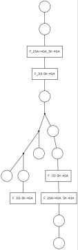
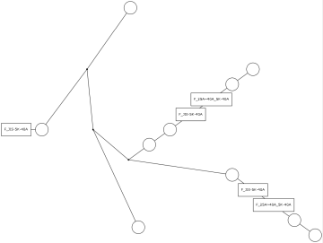
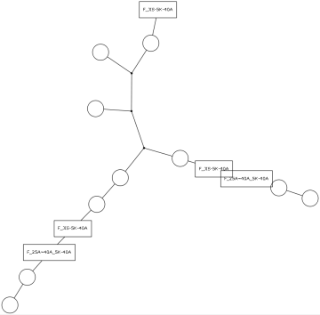
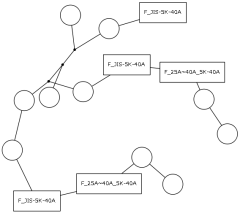
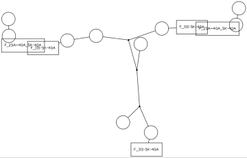

配管セットを選択し、その中に含まれる配管要素の接続状態を模式図として画像ファイル（PNG形式）に出力します。模式図の種類は、は樹形図ふう、路線図ふうのものなど5つの中から選択できます。
モデル構成ウィンドウに表示された配管セットのコンテキストメニューから「配管模式図作成」をクリックします。「名前をつけて保存」ウィンドウが表示されますので、画像ファイル名と模式図の種類を指定してOKをクリックします。
模式図の種類を指定します。
|  |
| 樹形図 |
|---|
|  |
| 相似円 |
|---|
|  |
| 路線図1 |
|---|
|  |
| 路線図2 |
|---|
|  |
| 路線図3 |
|---|
設定ファイルフォルダー内のファイル「EvPipingDiagramSetting.csv」でさらに詳細なパラメータを指定できます。書式については設定ファイル内のコメントを参照してください。
以下のようなパラメータを指定可能です。
配管セットの開放端にある要素は非表示指定されていてもかならず表示されます。
配管要素の種類によって（配管機器コンポーネントは名前マッチングによって）以下のようなパラメータを指定可能です。